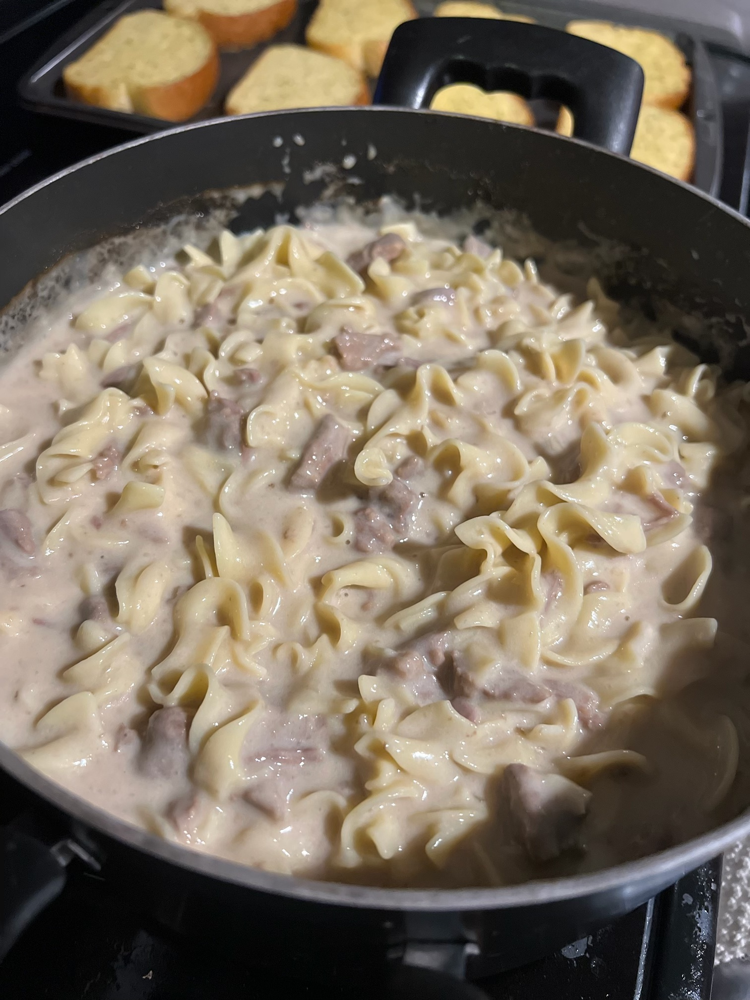

Home
Beef Stroganoff

Paragraph about how good beef stroganoff is
Ingredients
- 2 lbs stew meat
- 16 oz sour cream
- 1 large white onion
- Beef bouillion cubes
- 1 TBSP salt
- 1 tsp pepper
- 1 TBSP garlic powder
- 1 TBSP onion powder
- 1 TBSP cornstarch
- 1 bag of extra wide egg noodles
Beef Stroganoff
- Start by seasoning the stew meat and chopping the white onion. Season the stew meat with salt, pepper, garlic powder and onion powder.
Add the stew meat and the chopped white onion into a pot of water and bring to a rolling boil. Allow the stew meat and onion to boil for about 1 hour. After an hour, add as many beef bouillion cubes as your heart desires...I add between 12 and 15 cubes. Let the meat and onions continue to boil for another 30 minutes.
- Next, set aside about 2 cups of the beef water to cool. Use a slotted spoon to scoop the stew meat out of the pot. The meat should be tender and shred with slight pressure between your fingers. Shred all of the stew meat and set aside for now.
- Make your noodles and start the sour cream mixture.Boil the egg noodles for 10 to 12 minutes or until al dente. The 2 cups of beef water should be cool by now so grab that and put it into a blender with your tub of sour cream. Blend until smooth. The mixture may be foamy, but that is okay. Once completely blended, add mixture into the beef water with a whisk.
- Thicken the mixture! Once you've added the sour cream mixture back to the beef water pot, you may still need to thicken it a bit. This is where the cornstarch comes in. Add a bit of cold water to the cornstarch. Bring the beef water back to a boil and whisk in the cornstarch.
- Add everything back together! Add the stew meat and the noodles into the beef/sour cream mixture. Turn the heat off and let sit for about 10 minutes to thicken.
- ENJOY!